Pybalmorel for Map Plotting
This notebook provide examples on how to use the pybalmorel post processing map plotting tool.
### Loading scenarios
res = MainResults(files=['MainResults_Example1.gdx', 'MainResults_Example2.gdx', 'MainResults_Example3.gdx'], paths='files', scenario_names=['SC1', 'SC2', 'SC3'])
Basic map plotting
The map plotting tool only needs 2 arguments to work. One has to select the scenario (see scenarios importation in this section), and the year.
With those two arguments, the map of Europe is plotted with the countries inside the model in beige and the countries outside of the model in grey.
To plot the transmission lines and the generation information, one has to set the parameters lines, generation, and commodity (Electricity or Hydrogen).
Please note that lines and generation can also be plotted alone but that commodity is always necessary if one of them is used.
fig, ax = res.plot_map(scenario='SC3', year=2050)
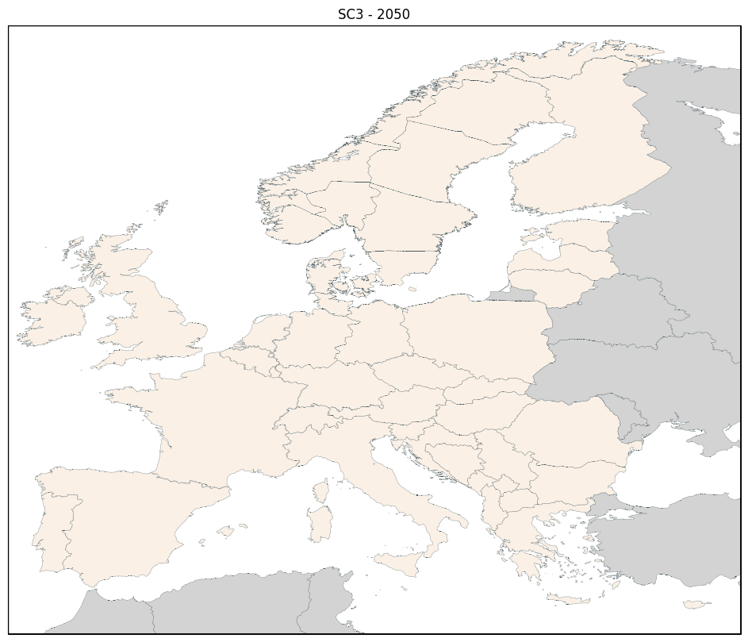
fig, ax = res.plot_map(scenario='SC3', year=2050, commodity='Electricity', lines='Capacity', generation='Capacity')
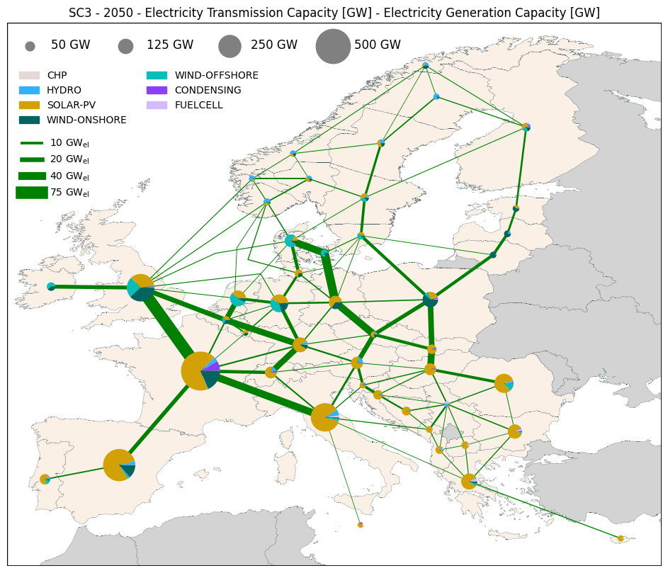
fig, ax = res.plot_map(scenario='SC3', year=2050, commodity='Hydrogen', lines='Capacity')
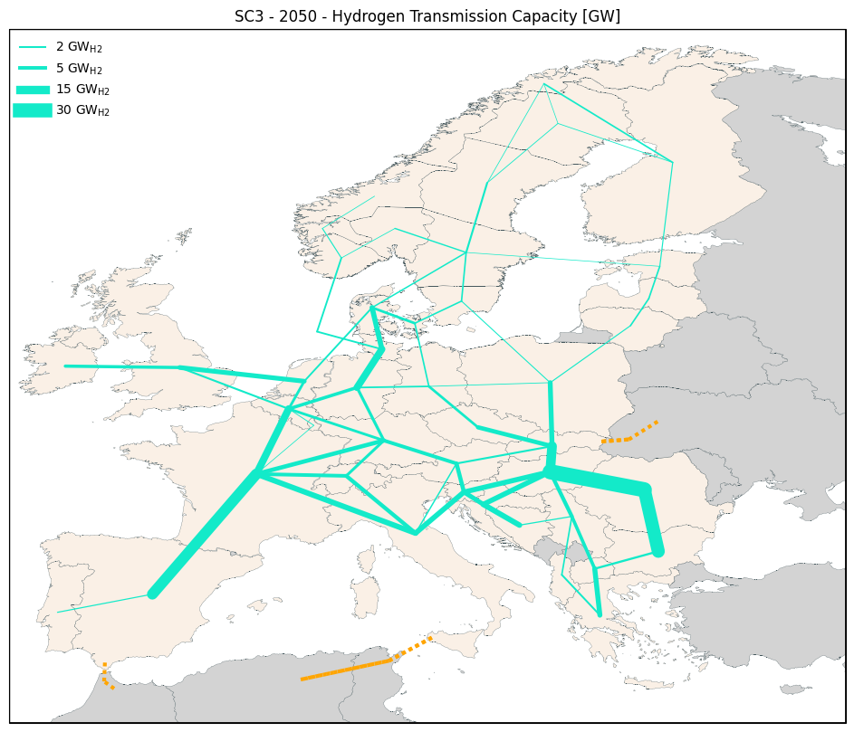
Selecting different transmission and generation information
The option lines allows to plot different transmission line information amongst Capacity, FlowYear, FlowTime, UtilizationYear, UtilizationTime.
The option generation allows to plot different generation information amongst Capacity, Production, ProductionTime.
Please note that for FlowTime, UtilizationTime and ProductionTime, it is possible to select a specific S and T.
If one wants the lines commodity and the generation commodity to be different, they can use the generation_commodity option.
fig, ax = res.plot_map(scenario='SC3', year=2050, commodity='Electricity', lines='FlowYear', generation='Production')
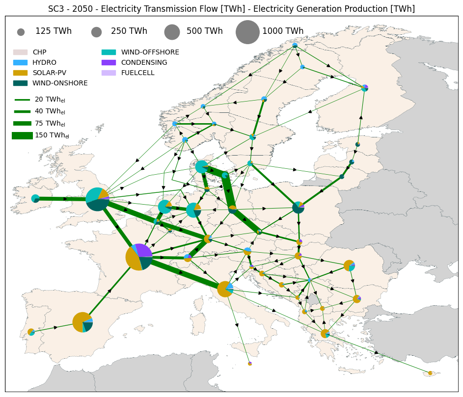
fig, ax = res.plot_map(scenario='SC3', year=2050, commodity='Electricity', lines='FlowTime', generation='ProductionTime', S='S08', T='T076')
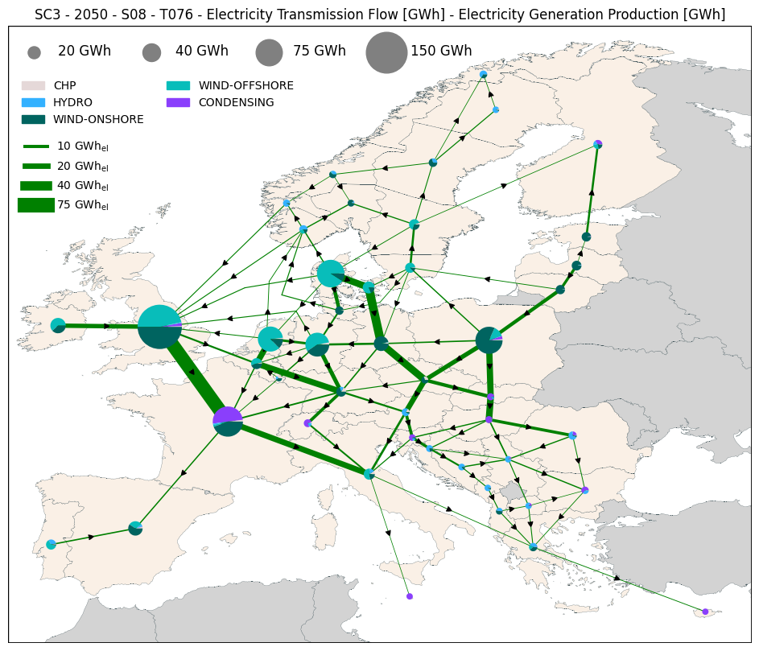
fig, ax = res.plot_map(scenario='SC3', year=2050, commodity='Hydrogen', generation_commodity='Electricity', lines='UtilizationYear', generation='Production')
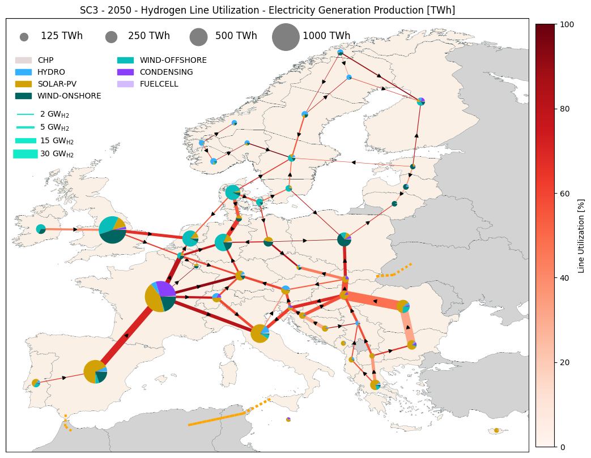
Background information
Using the option background, it is possible to plot an additional information that colors the countries. For now H2 Storage, Elec Storage, Elec Net Export, H2 Net Export and Elec Price have been implemented.
It is possible to personalize the background scale with the option background_scale and background_scale_tick as in the examples below (both can be used at the same time).
fig, ax = res.plot_map(scenario='SC3', year=2050, commodity='Electricity', lines='Capacity', generation='Capacity',
background="Elec Storage")
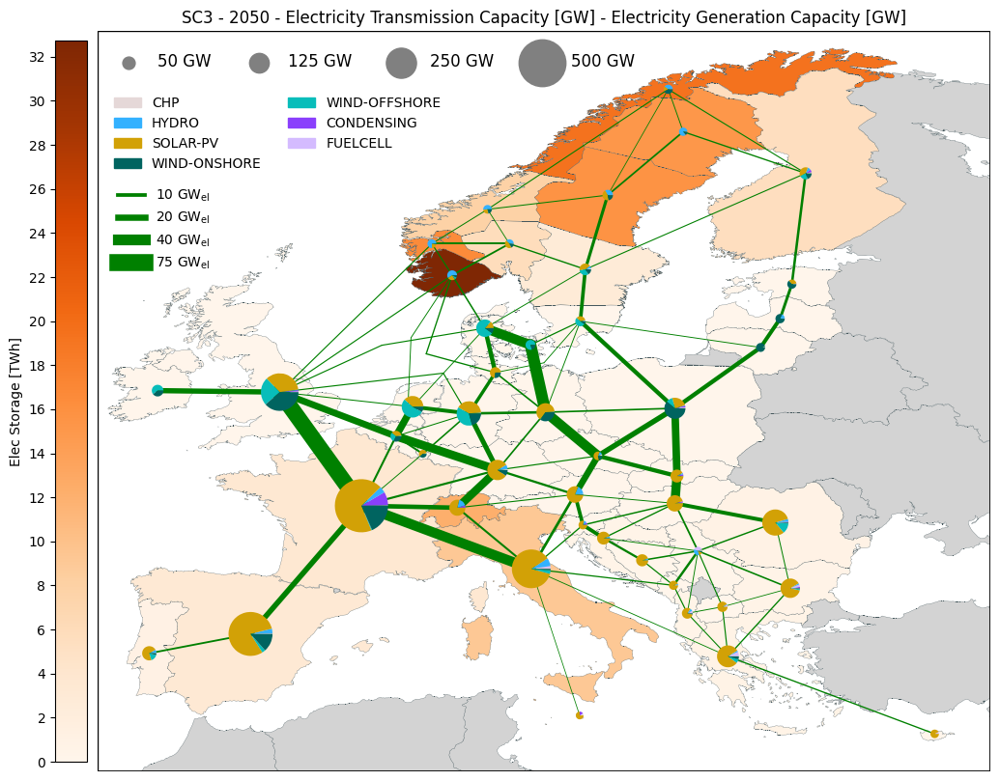
fig, ax = res.plot_map(scenario='SC3', year=2050, commodity='Hydrogen', lines='Capacity', generation='Capacity',
background="H2 Storage", background_scale = [0,25])
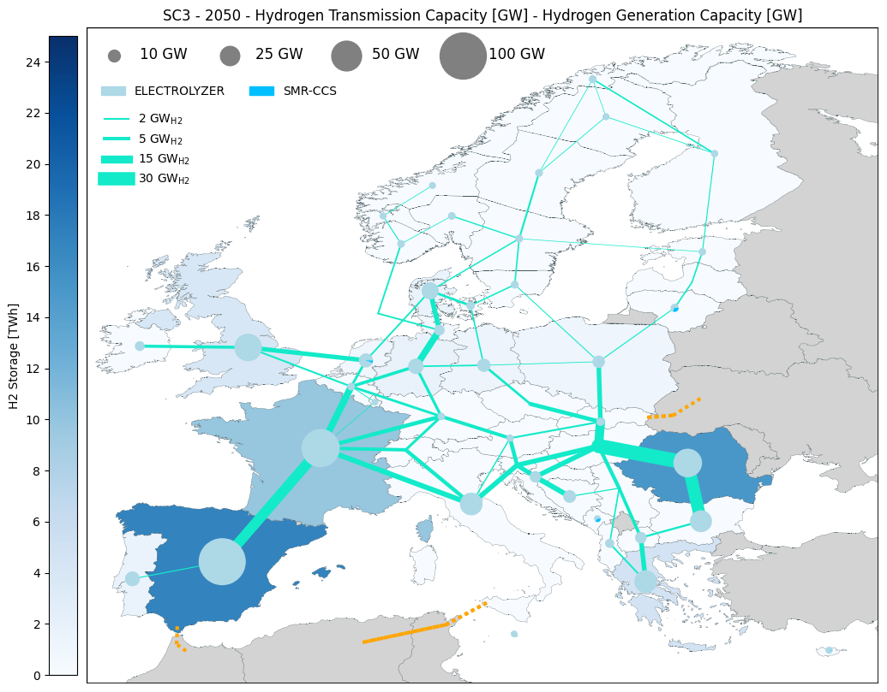
fig, ax = res.plot_map(scenario='SC3', year=2050, commodity='Electricity', lines='FlowYear', generation='Production',
background="Elec Net Export", background_scale_tick = 20)
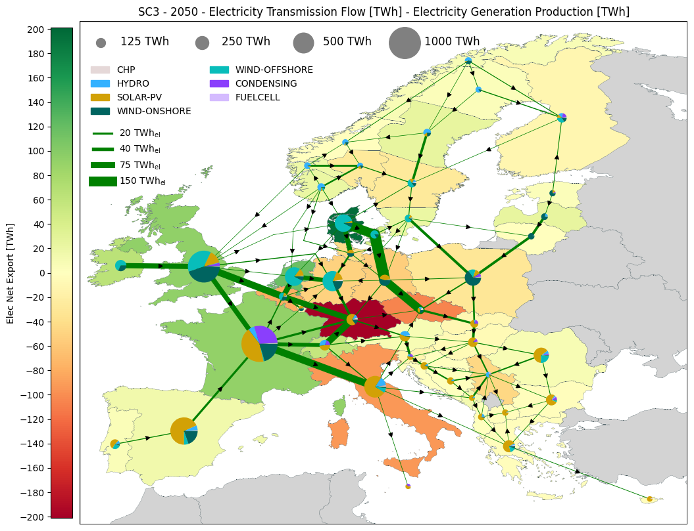
Size of the elements and legend
The size of the lines and pie charts is function of the options line_width_cat and pie_radius_cat and can be selected amongst log, linear, and cluster. (log is the default one)
While log and linear are computing the sizes based on maximum and minimum values (those values can be changed), cluster needs the input of cluster values and cluster widths/radius to work (see example below).
The size of the lines and the pie charts in the legend is automatic but one can choose to personalized them with line_legend_cluster_values and pie_legend_cluster_values.
Please note that if cluster is choosed as category, then the legend will used those categories. The width of the lines is in point and the radius of the pie chart in data unit.
It is also possible to change the legend of the pie charts and to select either TECH_TYPE or FFF to be plotted with the option generation_var.
fig, ax = res.plot_map(scenario='SC3', year=2050, commodity='Electricity', lines='Capacity', generation='Capacity', generation_var='TECH_TYPE',
line_width_cat = 'linear', pie_radius_cat = 'linear')
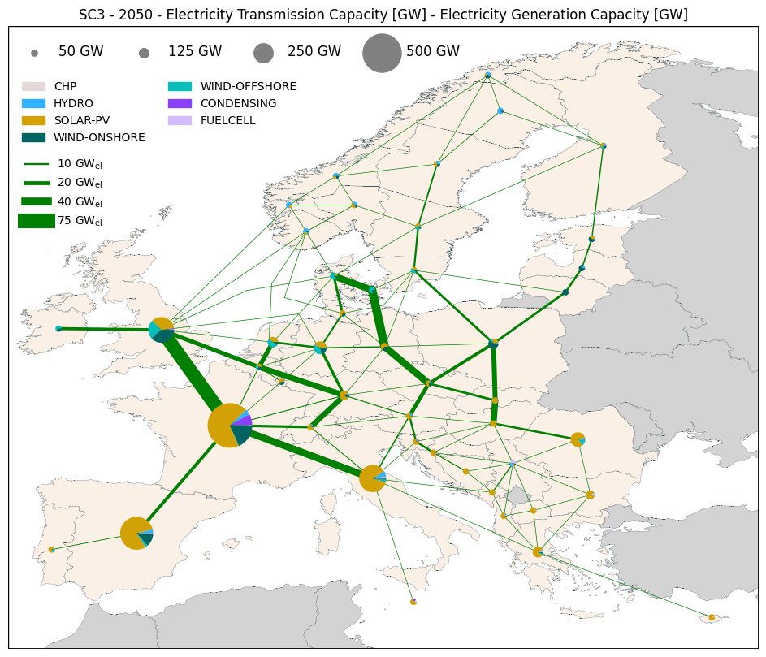
fig, ax = res.plot_map(scenario='SC3', year=2050, commodity='Electricity', lines='Capacity', generation='Capacity', generation_var='FFF',
line_value_max = 100, line_legend_cluster_values=[10, 20, 50, 100],
pie_value_max = 1000, pie_legend_cluster_values=[50, 200, 500, 1000])
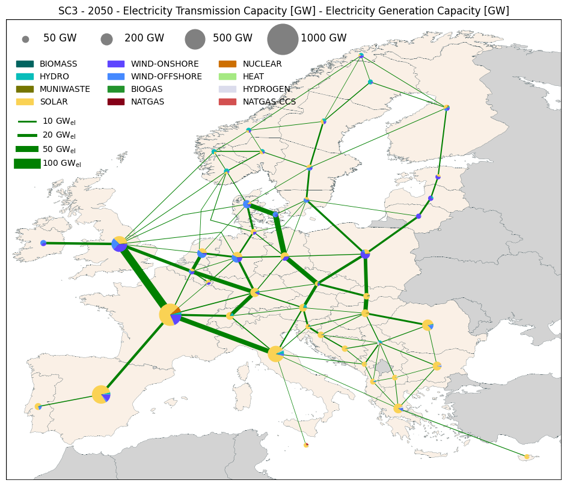
fig, ax = res.plot_map(scenario='SC3', year=2050, commodity='Electricity', lines='Capacity', generation='Capacity',
line_width_cat = 'cluster', line_cluster_values = [5, 10, 40, 80], line_cluster_widths = [0.5, 2, 5, 12],
pie_radius_cat = 'cluster', pie_cluster_values = [50, 100, 300, 500], pie_cluster_radius = [0.2, 0.5, 1, 1.5])
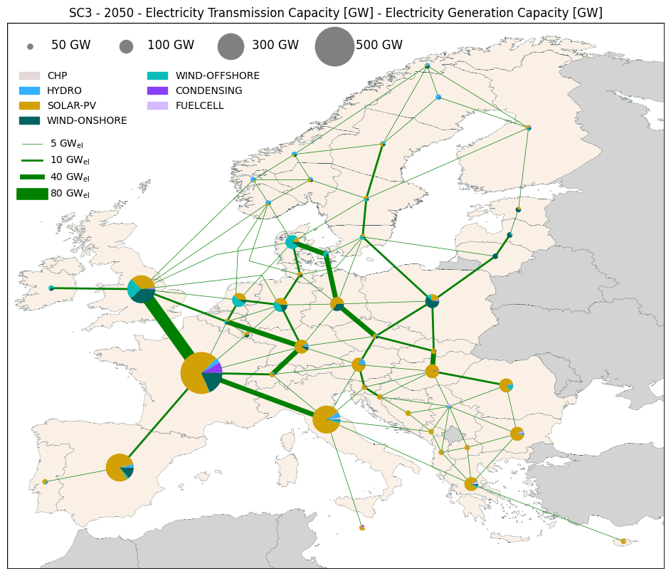
Geofile input and coordinates issues
Using the option path_to_geofile, it is possible to use a personalized map file with a specific column (option geo_file_region_column) with the name of the regions in your Balmorel file.
When using this option, the coordinates are set automatically as the border of the map plus an offset that can be modified with the option coordinates_geofile_offset.
It is also possible to choose to plot only Denmark by setting choosen_map_coordinates as “DK” (if you only have data for denmark, please use it) or to select specific coordinates with map_coordinates.
Please note that when modifying all of this, you will have trouble with the size of the lines and pie charts that are defined in data values. You will need to modify those to have something that you like.
For now, the legend is only working for the EU coordinates (in the case of having data for all EU) !!
fig, ax = res.plot_map(scenario='SC3', year=2050, commodity='Electricity', path_to_geofile="../../../examples/files/Geofile_Example.geojson")
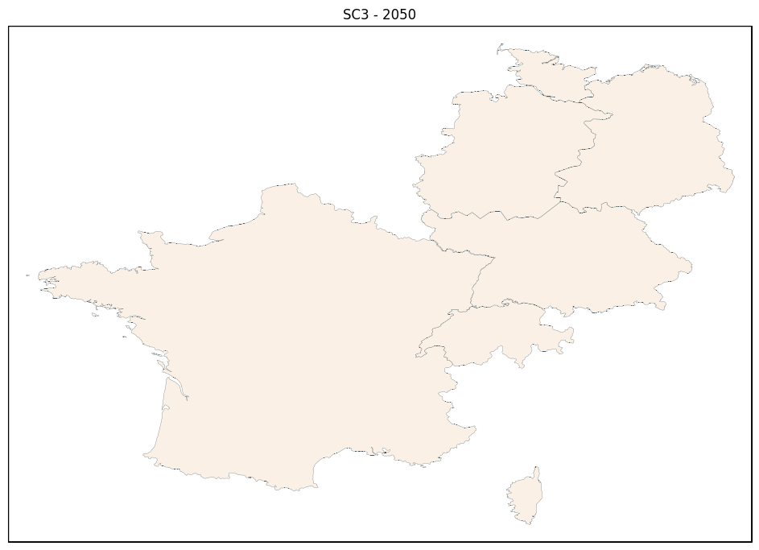
fig, ax = res.plot_map(scenario='SC1', year=2050, commodity='Electricity', lines='Capacity', generation='Capacity')
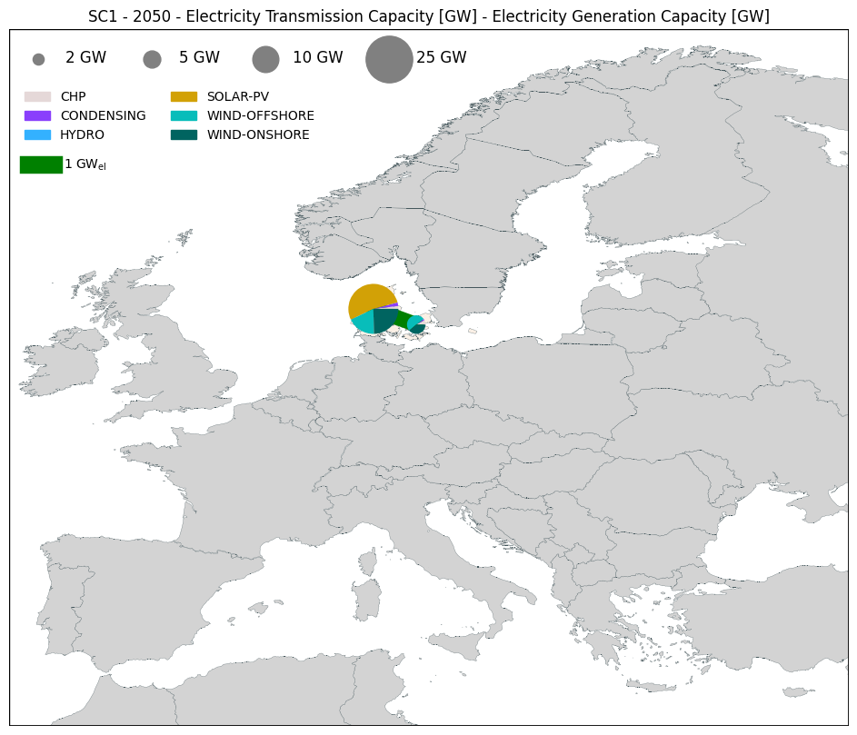
fig, ax = res.plot_map(scenario='SC1', year=2050, commodity='Electricity', lines='Capacity', generation='Capacity', choosen_map_coordinates="DK")
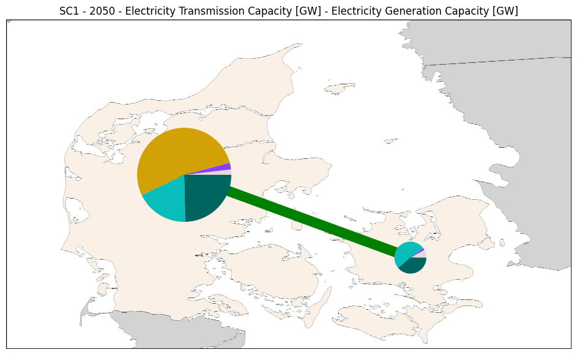
Additional options
There is a large number of additional options available and the detailed can be found in the function’s help below :
help(res.plot_map)
Let’s review some examnples :
# If you want to show the value of the lines and not the arrows
fig, ax = res.plot_map(scenario='SC3', year=2050, commodity='Electricity', lines='UtilizationYear', generation='Capacity',
line_label_show=True, line_flow_show=False)
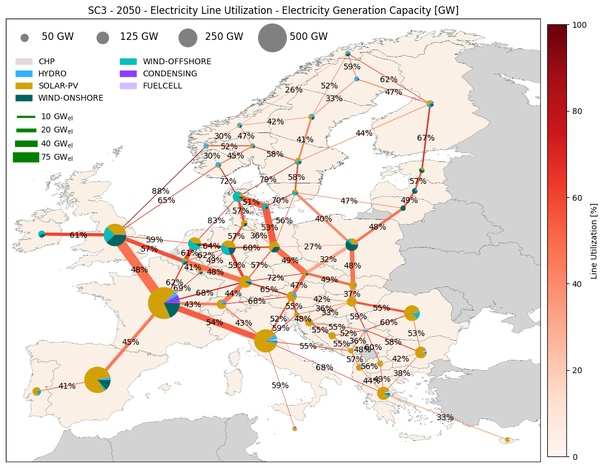
# If you want to not plot the smaller lines and pies you can define a minimum value
fig, ax = res.plot_map(scenario='SC3', year=2050, commodity='Electricity', lines='FlowYear', generation='Capacity',
line_show_min=10, pie_show_min=50)
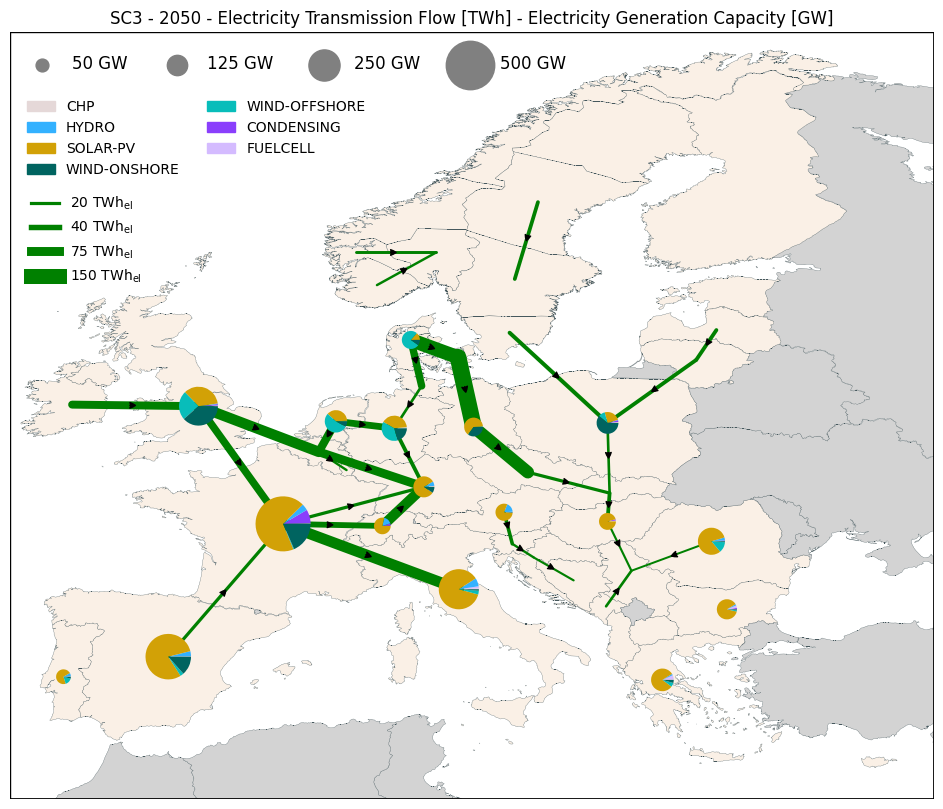
# If you want to specified the colors of different things on the graph
fig, ax = res.plot_map(scenario='SC3', year=2050, commodity='Electricity', lines='FlowYear', generation='Capacity',
background_color='blue', regions_model_color='green', regions_ext_color='red', line_color='black')
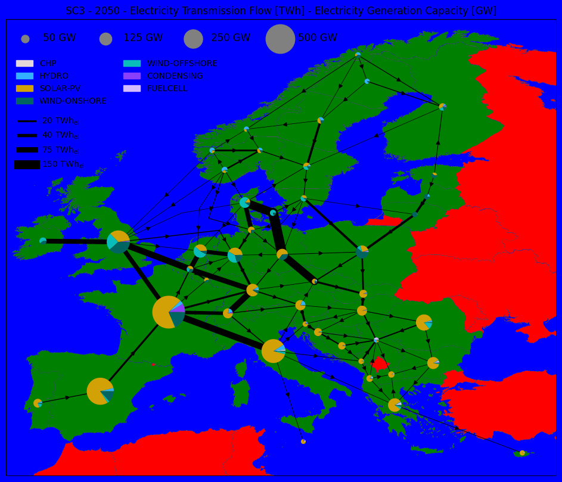
# If you want to specify the colors used for the different countries, using a csv file (this coloring has the priority on everything)
fig, ax = res.plot_map(scenario='SC3', year=2050, commodity='Electricity', lines='FlowYear', generation='Production',
countries_colors_path = "../../../examples/files/countries_colors_example.csv")
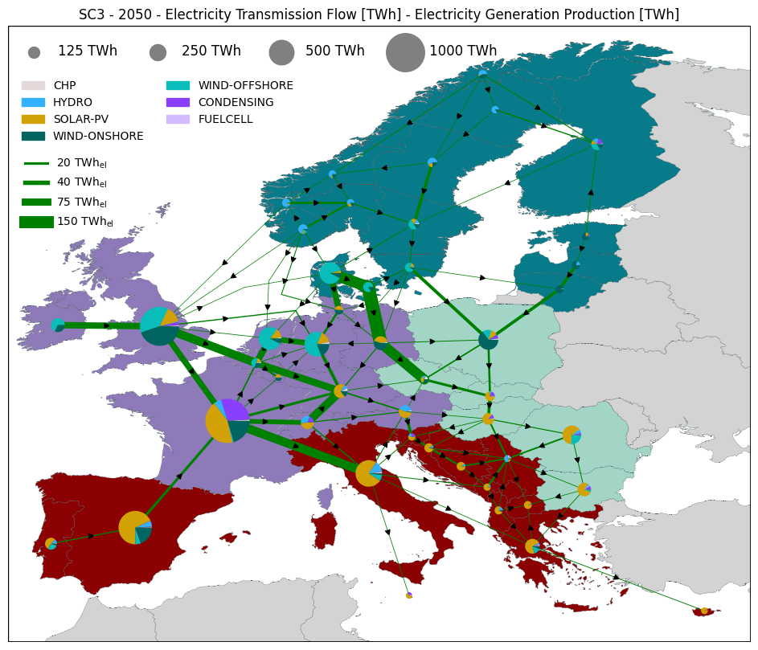
# If you want to display another information on the map, based on a csv file (e.g. with full load hours)
fig, ax = res.plot_map(scenario='SC3', year=2050,
countries_background_path = "../../../examples/files/countries_background_example.csv",
background_scale_tick = 100, background_scale=[1000, 2000],
background_name = 'PV Full Load hours', background_unit = 'h',
background_label_show = True)
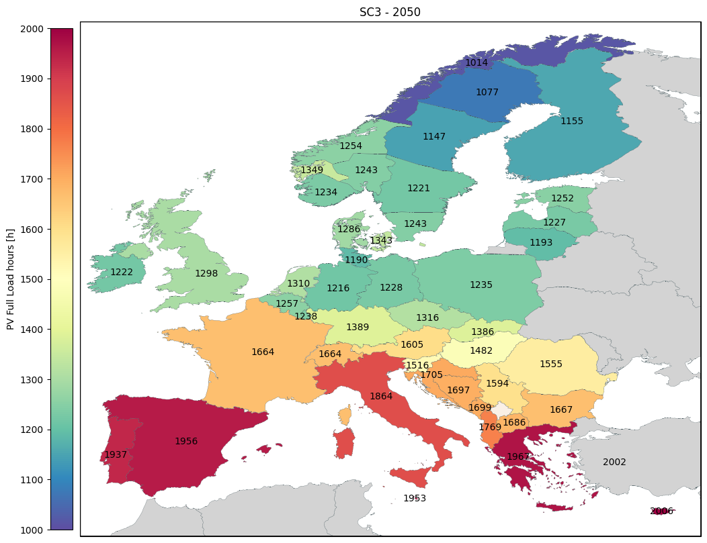